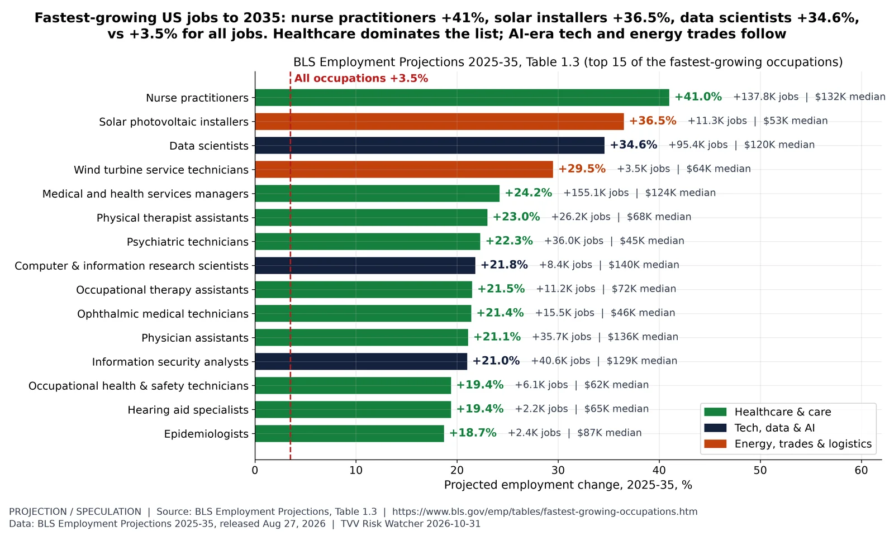
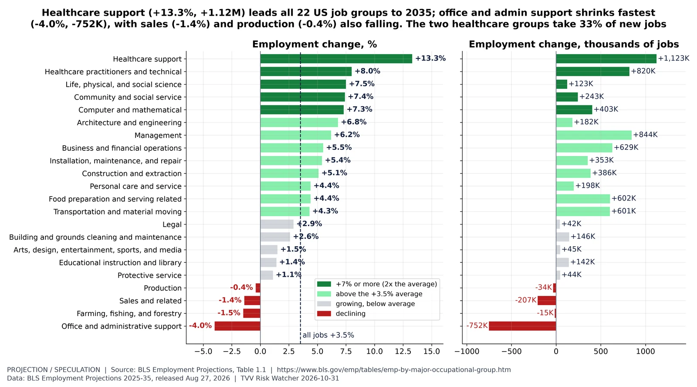
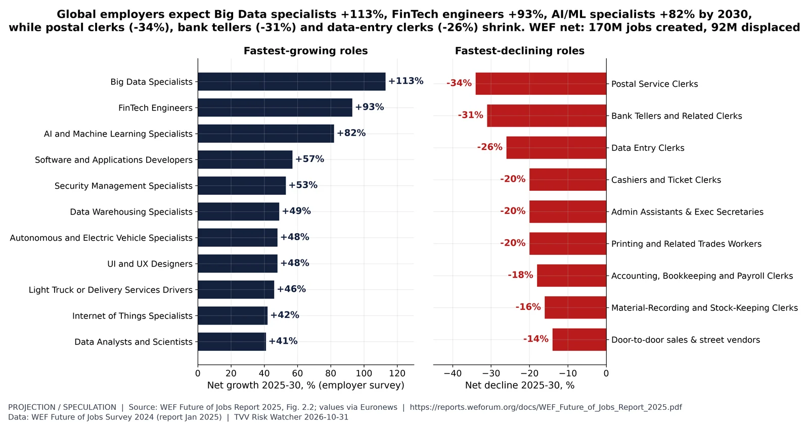

The counter-strategy side: occupations and groups projected to grow most (BLS 2025-35) and the roles global employers expect to grow or shrink by 2030 (WEF). Projections and survey expectations, not TVV forecasts.

Fastest-growing jobs to 2035. BLS projects total US employment to rise 3.5% (5.9M jobs) from 2025 to 2035. The fastest-growing occupations: nurse practitioners +41.0% (+137.8K), solar PV installers +36.5% (+11.3K), data scientists +34.6% (+95.4K), wind turbine technicians +29.5%, medical and health services managers +24.2%. 10 of the top 15 are healthcare or care roles. Fast % growth in small occupations adds few jobs: solar and wind together add fewer than 15K (BLS). BLS 2025-35 projections (released Aug 27, 2026) supersede the 2024-34 set. Projections, not forecasts by TVV. Jobs/Labor series. [Projection. Data: BLS Employment Projections 2025-35, released Aug 27, 2026] Source: https://www.bls.gov/emp/tables/fastest-growing-occupations.htmhttps://www.bls.gov/news.release/ecopro.nr0.htmMost new jobs to 2035. BLS Table 1.4: home health and personal care aides add 847.3K jobs 2025-35 (+18.1%, median wage $35,800), 14.3% of the 5.9M total. Next: stockers and order fillers +250.7K, fast food and counter workers +223.3K, registered nurses +194.7K, general and operations managers +181.3K, software developers +174.7K (+10.2%). The top 15 add 2,963.9K jobs (50% of the total). Many of the biggest gains are in lower-wage, hands-on care and service work. Projections, not forecasts by TVV. Jobs/Labor series. [Projection. Data: BLS Employment Projections 2025-35, released Aug 27, 2026] Source: https://www.bls.gov/emp/tables/occupations-most-job-growth.htmhttps://www.bls.gov/news.release/ecopro.nr0.htm

Job growth by occupational group. BLS Table 1.1, 2025-35: healthcare support +13.3% (+1,122.7K), healthcare practitioners and technical +8.0% (+819.5K), life, physical and social science +7.5%, community and social service +7.4%, computer and mathematical +7.3% (+403.1K), architecture and engineering +6.8%. Declines: office and administrative support -4.0% (-752.1K, the most of any group), sales -1.4% (-206.8K), farming -1.5%, production -0.4%. BLS cites automation tools, including AI, for the office/admin and sales declines. The two healthcare groups add 32.8% of all new jobs. Projections, not forecasts by TVV. Jobs/Labor series. [Projection. Data: BLS Employment Projections 2025-35, released Aug 27, 2026] Source: https://www.bls.gov/emp/tables/emp-by-major-occupational-group.htmhttps://www.bls.gov/news.release/ecopro.nr0.htm

WEF growing vs declining roles. WEF Future of Jobs Report 2025, Figure 2.2 (survey of 1,000+ employers, 14M+ workers, 55 economies): net growth 2025-30 in roles at surveyed employers. Growing: Big Data Specialists +113%, FinTech Engineers +93%, AI and ML Specialists +82%, Software and Applications Developers +57%, Security Management +53%. Declining: Postal Service Clerks -34%, Bank Tellers -31%, Data Entry Clerks -26%, Cashiers, Admin Assistants and Printing workers -20% each. WEF estimates 170M jobs created and 92M displaced globally by 2030 (net +78M). WEF prints the bars without values; the values are as published by Euronews (Feb 1, 2025) and match the bar lengths. Four further growing roles and six declining roles shown by WEF have no published values and are omitted. Employer survey expectations, not forecasts by TVV. Jobs/Labor series. [Projection. Data: WEF Future of Jobs Survey 2024 (report Jan 2025)] Source: https://reports.weforum.org/docs/WEF_Future_of_Jobs_Report_2025.pdfhttps://www.weforum.org/publications/the-future-of-jobs-report-2025/in-full/2-jobs-outlook/https://www.euronews.com/business/2025/02/01/jobs-market-at-a-crossroads-which-are-the-fastest-growing-and-declining-jobs